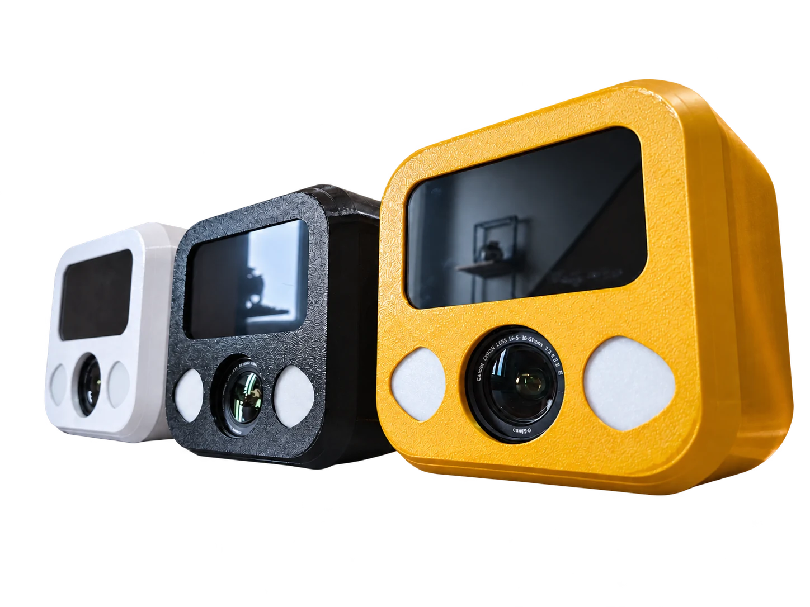

Créer une borne photo compacte et transportable pour les événements.
Raspberry PiÉlectronique sur mesureImpression PETG

Bornes photo : blanc, noir et jaune.Le besoin
Limiter l’encombrement, le coût et le temps d’assemblage d’une borne destinée à la location.
L’intervention
Conception de la carte électronique, du logiciel et du boîtier, avec plusieurs itérations issues des essais terrain.
Le résultat
Une série de six bornes réalisée à partir de la version validée.
Besoin et contraintes
La borne devait réunir prise de vue, écran et impression dans un équipement transportable, destiné à la location pour les mariages et événements.
Le coût de fabrication visé était inférieur à 500 € par borne pour permettre une location au tarif cible de 150 €. La fabrication devait rester adaptée à une petite série assemblée en France.
Conception et architecture
Les retours utilisateurs ont conduit à plusieurs versions du boîtier. Chaque modification devait rester compatible avec l’assemblage, le transport et la fabrication en petite série.
Designs du photobooth
La version retenue a été modélisée en 3D. Une carte électronique sur mesure regroupe les commandes de prise de vue, de flash, d’impression et d’écran ; le logiciel a été réécrit pour cette architecture.
Modélisation 3D du photobooth
Réalisation et intégration
La première version fonctionnelle réunissait un Raspberry Pi, un appareil photo et une imprimante professionnelle dans un assemblage mécanique de test.
Cette première version demandait au moins dix heures d’assemblage. Elle a permis les essais terrain, mais le temps de montage devait être réduit avant de fabriquer plusieurs unités.
Prototype du photobooth
Préindustrialisation
Étant donné la petite série envisagée, l’assemblage a été réalisé en interne : impression 3D en PETG, montage électronique, câblage, programmation.
Les circuits imprimés ont été fabriqués en Allemagne par un sous-traitant. Les composants ont ensuite été assemblés en interne avec une machine de placement.
Notre pick and place
Le boîtier a été imprimé en PETG. Pour six unités, ce procédé évitait l’investissement dans un moule d’injection et permettait de modifier les pièces entre deux versions.
Notre imprimante 3D filament
Les plans d’assemblage, les temps de fabrication et les coûts machines ont été documentés pour préparer les exemplaires suivants.
Version retenue pour la série
Essais et validation
Le prototype a été testé lors d’événements, dont notre mariage. Les essais couvraient l’installation, la prise de vue et l’impression pendant une prestation.
Les retours ont conduit à déplacer les connecteurs pour faciliter l’installation et à remplacer les boutons par un écran tactile.
Un échantillon de la version de production a été soumis à des essais de robustesse et utilisé par des proches, des collègues et des amis. Les retours ont été partagés avec La Forge à Souvenirs avant la fabrication de la série.
Six bornes ont ensuite été assemblées selon cette version.
Photobooth en production
Résultat
Six bornes ont été assemblées avec La Forge à Souvenirs et mises en service pour la location événementielle.